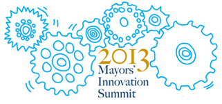

Agenda
Wednesday, May 22, 2013
- 3:00 p.m. - 6:00 p.m.
- Registration
- 6:30 p.m. - 8:30 p.m.
- Evening Reception
Comcast Center (Walking distance from the hotel)
Thursday, May 23, 2013
- 7:00 a.m. - 5:00 p.m.
- Registration (Westin Hotel)
- 7:30 a.m.
- Breakfast (Salon 1)
- 8:30 a.m.
-
Welcome
Setting the Stage: Innovating for Democracy
-
MICHAEL A. NUTTER
Mayor of Philadelphia
President, The United States Conference of Mayors
-
EDWIN M. LEE
Mayor of San Francisco
Chair, Technology and Innovation Task Force, The United States Conference of Mayors
-
SIMON HAKIM, PhD
Director, Center for Competitive Government and Professor of Economics, Temple University
- 9:00 a.m.
-
Solving Urban Challenges: Innovations for Impact
Moderated by:
-
MATTHEW STEPKA
Vice President, Google
Panel:
-
ALVIN BROWN
Mayor of Jacksonville, FL
-
GREG FISCHER
Mayor of Louisville, KY
-
ANGEL TAVERAS
Mayor of Providence, RI
-
WILLIAM OATES
Chief Information Officer, Boston, MA
-
JAMES ANDERSON
Bloomberg Philanthropies
- 10:15 a.m.
- Coffee and Conversations (Google Lounge)
- 10:30 a.m.
-
Opening the Government: Creating Data Democracies for the Public Good
Ignite Talk:
-
JOHN TOLVA
Chief Technology Officer, Chicago, IL
Moderated by:
-
EDWIN M. LEE
Mayor of San Francisco
Chair, Technology and Innovation Task Force, The United States Conference of Mayors
Panel:
-
CHRIS TONJES
Chief Information Officer, Baltimore, MD
-
ANDREW NICKLIN
Director of Research and Development, DoITT, New York City
-
CAROL BRAUN
Director, North Americas Smarter Cities, Public Sector Industry Smarter Solutions, IBM
-
PHILIP ASHLOCK
Open311
- 12:00 p.m.
-
Lunch
-
DAVID L. COHEN
Executive Vice President Comcast Corporation
-
BRIAN FORDE
Senior Advisor to the U.S. CTO at The White House Office of Science and Technology Policy
- 1:00 p.m.
-
The New Infrastructure: The Economy of Investing in Broadband
Ignite Talk:
-
MILO MEDIN
Vice President Access Services, Google
Moderated by:
-
JOANNE HOVIS
President of CTC Technology & Energy
Panel:
-
SYLVESTER “SLY” JAMES
Mayor of Kansas City, MO
-
OTTO DOLL
Chief Information Officer, Minneapolis, MN
-
ELLEN SATTERWHITE
Program Director, Gig.U.
- 2:00 p.m.
-
Seeding Civic Engagement with Technology
Moderated by:
-
ADEL EBEID
Chief Innovation Officer, Philadelphia
Panel:
-
SCOTT SMITH
Mayor of Mesa, AZ
Vice President, The United States Conference of Mayors
-
ASHLEY HAND
Chief Innovation Officer, City of Kansas City, MO
-
CHRIS OSGOOD
Co-Chair, Boston New Urban Mechanics
-
LILY LIU
Founder and CEO, PublicStuff
- 3:00 p.m.
- Coffee and Conversations (Google Lounge)
- 3:15 p.m.
-
Building the Team: Marshaling the Urban Forces of Innovation
Moderated by:
-
JOHN MARKS
Mayor of Tallahassee, FL
Panel:
-
BILL HARRISON
Mayor of Fremont, CA
-
MARC TOUITOU
Chief Information Officer and Director of the Department of Technology, City of San Francisco, CA
-
BEN HECHT
President and CEO, Living Cities
-
LAURA WEIDMAN POWERS
Founding Executive Director, CODE2040
-
NAVARROW WRIGHT
Chief Technology Officer, Interactive One
- 5:00 p.m.
-
Tour of the Navy Yard
Buses leave at 5:15 p.m. Tour begins at 5:45 p.m.
On the bus to the Navy Yard, hear about one of 3 exciting Philadelphia projects –
Greenworks Philadelphia, Mayor Nutter’s 15-target sustainability plan; StartupPHL, a creative
new approach to incubating early-stage companies in Philadelphia; and CultureBlocks, Mayor Nutter’s
newest open data tool that maps the creative and cultural assets in neighborhoods across the city.
- 6:30 p.m.
-
Reception and Dinner
Urban Outfitters
Friday, May 24, 2013
- 8:00 a.m. - 12:00 p.m.
- Registration (Westin Hotel)
- 7:30 a.m.
- Breakfast Buffet (Salon 1)
- 8:00 a.m.
-
Setting up Shop: Catalyzing Local Innovation
Moderator:
-
CHRIS WINK
Technically Philly
Ignite Presenters:
-
MICHAEL BRENNAN
Second Muse
-
BRIGITTE DANIEL
Executive Vice President, Wilco Electronic Systems
-
KEYA DENENBAUM
Founder and Chief Executive Officer, ElectNext
-
ALEX HILLMAN
Founder, Indy Hall
-
MICHELLE LEE
CEO, Textizen
- 9:15 a.m.
-
Breaking Through the Barriers to Spur Innovation
Moderated by:
-
NEIL KLEIMAN
Director, NYU Wagner Innovation Labs
Panel:
-
MICHAEL NUTTER
Mayor of Philadelphia
President, The United States Conference of Mayors
-
DAVID EDINGER
Chief Performance Officer, City of Denver
-
JENNIFER PAHLKA
Executive Director, Code for America
-
MICHAEL MANESS
Vice President, Journalism and Media Innovation, Knight Foundation
-
YOUNGJIN YOO
Director, Center for Design+Innovation, Fox School of Business
- 10:30 a.m.
- Coffee and Conversations (Google Lounge)
- 10:45 a.m.
-
Facilitated Discussion: Innovating for our Future?
Facilitator:
-
SUSAN MOLINARI
Vice President of Public Policy & Government Affairs, Google
With:
-
MICHAEL A. NUTTER
Mayor of Philadelphia
President, The United States Conference of Mayors
-
SCOTT SMITH
Mayor of Mesa, AZ
Vice President, The United States Conference of Mayors
-
EDWIN M. LEE
Mayor of San Francisco
Chair, Technology and Innovation Task Force, The United States Conference of Mayors
- Noon
- Luncheon and Adjourn